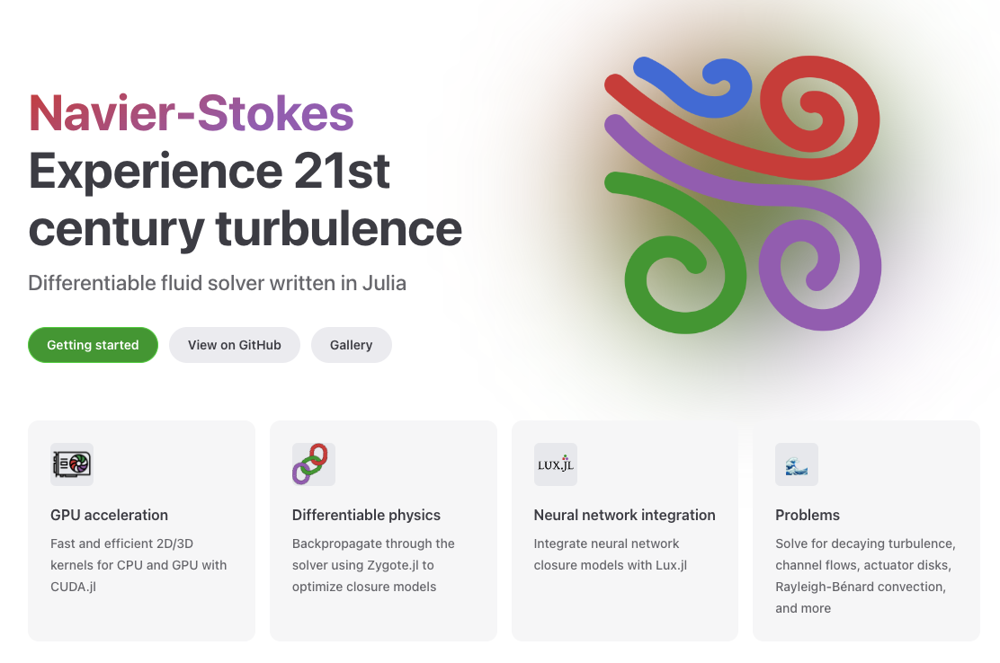

NeuralClosureTutorials: Neural closure modeling tutorials from the 2023 SciML semester programme.
IncompressibleNavierStokes.jl: Incompressible Navier-Stokes solver in Julia with neural networks to model turbulence.
DEEPDIP project: Project to integrate neural networks in physics applications through SciML libraries. In particular, the CNODE is a coupling library in which multiple coupled ODEs with neural networks in the right-hand side can be learned from data.
IncompressibleNavierStokes.jl: Incompressible Navier-Stokes solver in Julia.
INS2D: Incompressible Navier-Stokes solver in MATLAB.
Spectral solver: spectral solver.

HELMEOS: An entropy stable solver for the compressible Euler equations using a real gas equations of state based on the Helmholtz free energy.
SPADES: An entropy stable solver for the shallow water equations as part of our collaboration with Inria MEMPHIS team.
INS2D: Incompressible Navier-Stokes solver with energy-conserving POD-Galerkin.
EasySurrogate: Toolkit for creating surrogate models.
EasyVVUQ: Toolkit for Verification, Validation and Uncertainty Quantification.
UQ4WIND: Uncertainty quantification for aeroelastic wind turbine calculations, based on the UQLab tools.